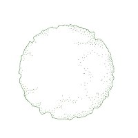
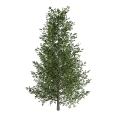
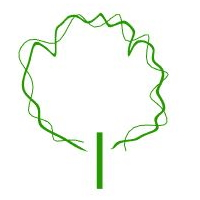

Pflanze
Wo befindet sich dieser Befehl?
laPflanze
Symbol:

Linksklick
Die Pflanze ist das Hauptelement in einem Garten oder einer Landschaft und das wichtigste Objekt in Lands Design.
Einsetzen einer Pflanze:
Durch Ausführen des Befehls laPflanze wird der Einfügedialog für Pflanze geöffnet. Dieser Dialog zeigt die grundlegenden Optionen des Pflanzenobjekts auf drei verschiedenen Reitern an.
- Pflanze: Arten und Bemaßungen in der Zeichnung.
- Format: kaliber UND Darstellungsmodus der Pflanzenart.
- Rendern: Parameter zur Definierung, wie das Pflanzenobjekt in einer Renderdarstellung aussieht.
Vorgehen:
- Wählen Sie eine Pflanzenart aus der Liste, unter dem Reiter Pflanze. Klicken Sie auf die Schaltfläche
Durchsuchen... um eine neue aus der Pflanzendatenbank auszuwählen.
- Wählen Sie die restlichen Einfügungsparameter aus (Kaliber, Darstellungsmodus und Bemaßungen in der Zeichnung) und klicken Sie auf OK , um den Dialog zu schließen.
- Wählen Sie die Einfügungspunkte im Modell mit einem Linksklick. Für jeden Klick wird eine neue Pflanzenart eingesetzt. Sie können die Pflanzenparameter während des Einfügens abändern, und zwar im Lands-Design-Bearbeitungspanel, im Eigenschaftenabschnitt, unter dem Reiter Pflanze.
- Beenden Sie den Befehl durch Drücken von EINGABE, ESC oder Klicken auf die rechte Maustaste.

Einfügedialog für das Pflanzenobjekt.
Wo befindet sich dieser Befehl?
Symbol:

Linksklick
Pflanze aus Punkten:
Durch Ausführen des Befehls laPflanze wird der Einfügedialog für Pflanze geöffnet. Dieser Dialog zeigt die grundlegenden Optionen des Pfadobjekts wie zuvor beschrieben an.
Vorgehen:
- Wählen Sie eine Pflanzenart aus der Liste, unter dem Reiter Pflanze. Klicken Sie auf die Schaltfläche
Durchsuchen... um eine neue aus der Pflanzendatenbank auszuwählen.
- Wählen Sie die restlichen Einfügungsparameter aus (Kaliber, Darstellungsmodus, und Bemaßungen in der Zeichnung) und klicken Sie auf OK, um den Dialog zu schließen.
- Wählen Sie die Option AusPunkten in der Befehlszeile.
- Wählen Sie die Punktobjekte im Modell, wo Sie die Pflanzen platzieren möchten.
- Beenden Sie den Befehl durch Drücken von EINGABE, ESC oder Klicken auf die rechte Maustaste.
Kontrollpunkte 
Pflanzen haben einen einzigen Kontrollpunkt, der sich auf dem unteren mittleren Punkt des Objekts befindet.
Pflanzen-Kontrollpunkte werden bei der Einzelauswahl von Pflanzen automatisch aktiviert. Um einen oder mehrere Pflanzen-Kontrollpunkte zu aktivieren, wählen Sie einfach die Pflanze aus und starten Sie den Befehl PunkteEin (oder drücken Sie F10). Um die Punkte zu deaktivieren, drücken Sie ESC oder starten Sie den Befehl PunkteAus.
Einfügeoptionen und -parameter
Die Pflanzen-Einfügungsoptionen und -Parameter sind in unterschiedliche Reiter aufgeteilt und über verschiedene Dialoge abrufbar:
Allgemein
Allgemeine Attribute für das Pflanzenobjekt: Name, Farbe, Code und Stichwörter.
Pflanze
- Art: Der Name der ausgewählten Pflanzenart. Die Zusammenstellung zeigt eine Liste der verschiedenen Pflanzenarten an, die bereits im aktuellen Modell eingesetzt wurden. Sie können eine Pflanzenart aus der Liste auswählen, oder aber eine neue aus der Pflanzendatenbank, wofür Sie auf die Schaltfläche
Durchsuchen... klicken.
- Bemaßungen in der Zeichnung:
- Kronendurchmesser
- Ungefähre Höhe
- Alter
- Natürliche Variation: wenn sie aktiviert ist, setzt diese Option eine willkürliche Höhenvariation für eingefügte oder ausgewählte Pflanzenarten. Der Maximalwert (100 %) erzeugt Pflanzenarten, die von 50 % bis zu 150 % ihrer Größe reichen.
- Willkürliche Drehung: wenn sie aktiviert ist (Standard), stellt diese Option eine willkürliche Drehung der Pflanzen ein. Ist sie deaktiviert, können Sie für jede Pflanze einen spezifischen Drehwinkel definieren. Der Drehwinkel wird von der vertikalen Pflanzenachse aus gemessen.
Die minimalen und maximalen Werte der Pflanzenhöhe (Alter der Pflanze) werden durch die Eigenschaften jeder Pflanzenart definiert und können im Eigenschaftendialog der Pflanzenarten bearbeitet werden, der in der Pflanzendatenbank verfügbar ist.
Format
- Kaliber: Rindenbemaßung der Pflanzenart. Die verfügbaren Werte reichen von 10 bis 130 mm, Sie können aber auch jeden sonstigen Wert eingeben.
- Darstellungsmodus: verfügbar sind drei Darstellungsmodi, Sie können aber auch neue eingaben.
- Nackte Wurzel
- Wurzelballen
- Behälter
Rendern
Dieser Reiter bestimmt, wie das Pflanzenobjekt in einer Renderdarstellung aussieht. Sichtbar ist dieser Reiter nur, wenn die 3D-Darstellung der Pflanzen in den Dokumenteigenschaften auf Realistisch eingestellt ist.
- Jahreszeit: wenn das Kästchen Globale Jahreszeit ignorieren markiert ist, können Sie auswählen, in welcher Jahreszeit die Pflanzen gerendert werden, wobei Sie aus 7 vorhandenen Werten auswählen können: Vorfrühling, Frühling, Spätfrühling, Sommer, Spätsommer, Herbst, Winter...
- Laubdichte: Je nach Definition erzeugt Flamingo nXt mehr oder weniger Blätter.
Bearbeitungsoptionen
Dies sind die Bearbeitungsoptionen für das Pflanzenobjekt, verfügbar im
Bearbeitungsbereich des Bearbeitungsfensters:
Grafische Pflanze-Darstellung:
Lands Design bietet verschiedene gleichzeitige 2D- und 3D-Darstellungen für Pflanzen in der Zeichnung an, mit dem Ziel, die Pflanzen von drei verschiedenen Konzeptideen aus zu handhaben. Die Art der Pflanzen-Darstellung kann in den Dokumenteigenschaften geändert werden.
2D-Darstellung der Pflanze
|

|
|
| Baumkrone |
Symbol des Layouts mit Bemaßungen |
3D-Anzeige Pflanze
|

|
|
|

|
| Realistisch |
Detailliert |
Konzeptuell |
Höhen |